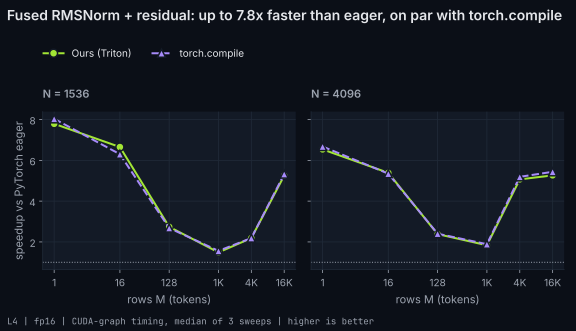

Fused RMSNorm + residual add
Every decoder block adds its output to the residual stream and then normalizes. Unfused, that is an add kernel, a norm kernel, and two extra trips through memory. The fused kernel reads x and the residual once, writes the new residual and the normalized output, and does the reduction in fp32. Numerics match Hugging Face's Qwen2RMSNorm step for step.
Kernel
kernels/rmsnorm.py: _rmsnorm_kernel (23 lines, click to show)
@triton.jit
def _rmsnorm_kernel(
x_ptr, res_ptr, w_ptr, out_ptr, res_out_ptr,
stride_x, stride_res, stride_out, stride_res_out,
N, eps,
HAS_RESIDUAL: tl.constexpr,
BLOCK: tl.constexpr,
):
row = tl.program_id(0)
cols = tl.arange(0, BLOCK)
mask = cols < N
x = tl.load(x_ptr + row * stride_x + cols, mask=mask, other=0.0)
if HAS_RESIDUAL:
r = tl.load(res_ptr + row * stride_res + cols, mask=mask, other=0.0)
x = x + r # fp16 add, same rounding as the unfused model
tl.store(res_out_ptr + row * stride_res_out + cols, x, mask=mask)
h = x.to(tl.float32)
var = tl.sum(h * h, axis=0) / N
normed = (h * tl.rsqrt(var + eps)).to(x.dtype)
w = tl.load(w_ptr + cols, mask=mask, other=0.0)
tl.store(out_ptr + row * stride_out + cols, normed * w, mask=mask)L4

| shape | triton (us) | eager (us) | compile (us) | speedup vs eager | triton % peak bw |
|---|---|---|---|---|---|
| M=1, N=1536, residual=True | 1.3 | 10.3 | 1.3 | 7.79x | 4% |
| M=16, N=1536, residual=True | 2.1 | 14.3 | 2.3 | 6.65x | 31% |
| M=4096, N=1536, residual=True | 212.6 | 465.9 | 212.9 | 2.19x | 79% |
| M=1, N=1536, residual=False | 1.3 | 9.1 | 1.2 | 7.31x | 2% |
| M=16, N=1536, residual=False | 1.7 | 13.0 | 2.0 | 7.44x | 19% |
| M=4096, N=1536, residual=False | 104.9 | 390.4 | 107.1 | 3.72x | 80% |
| M=128, N=1536, residual=True | 7.3 | 19.9 | 7.4 | 2.74x | 72% |
| M=1024, N=1536, residual=True | 57.3 | 85.1 | 54.5 | 1.49x | 73% |
| M=16384, N=1536, residual=True | 856.9 | 4502.4 | 845.1 | 5.25x | 78% |
| M=1, N=4096, residual=True | 1.6 | 10.6 | 1.6 | 6.54x | 8% |
| M=16, N=4096, residual=True | 3.5 | 18.8 | 3.5 | 5.39x | 51% |
| M=128, N=4096, residual=True | 16.6 | 39.6 | 16.5 | 2.38x | 84% |
| M=1024, N=4096, residual=True | 150.4 | 276.2 | 146.2 | 1.84x | 74% |
| M=4096, N=4096, residual=True | 571.0 | 2893.4 | 557.2 | 5.07x | 78% |
| M=16384, N=4096, residual=True | 2282.5 | 12019.0 | 2209.5 | 5.27x | 78% |
| M=128, N=1536, residual=False | 4.0 | 16.5 | 4.3 | 4.10x | 65% |
| M=1024, N=1536, residual=False | 25.6 | 59.7 | 26.6 | 2.33x | 82% |
| M=16384, N=1536, residual=False | 416.0 | 3855.9 | 426.9 | 9.27x | 81% |
| M=1, N=4096, residual=False | 1.4 | 9.4 | 1.4 | 6.50x | 6% |
| M=16, N=4096, residual=False | 2.3 | 17.1 | 2.3 | 7.39x | 39% |
| M=128, N=4096, residual=False | 8.6 | 29.6 | 8.9 | 3.43x | 81% |
| M=1024, N=4096, residual=False | 70.0 | 234.2 | 71.2 | 3.34x | 80% |
| M=4096, N=4096, residual=False | 277.9 | 2463.2 | 283.5 | 8.86x | 81% |
| M=16384, N=4096, residual=False | 1104.2 | 10302.1 | 1122.9 | 9.33x | 81% |
Profile on L4
| launch | time (ns) | DRAM % peak | SM % peak | occupancy % | regs/thread |
|---|---|---|---|---|---|
| rmsnorm_res_M4096 | 108384 | 95.84 | 8.25 | 91.88 | 30 |
Times are CUDA-graph medians over 3 sweeps with rotating buffers (working set at least 4x L2). * = more than 10% spread between sweeps.